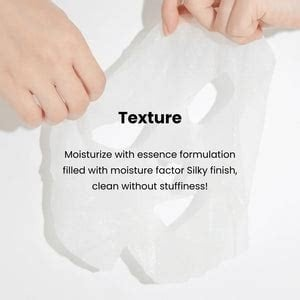
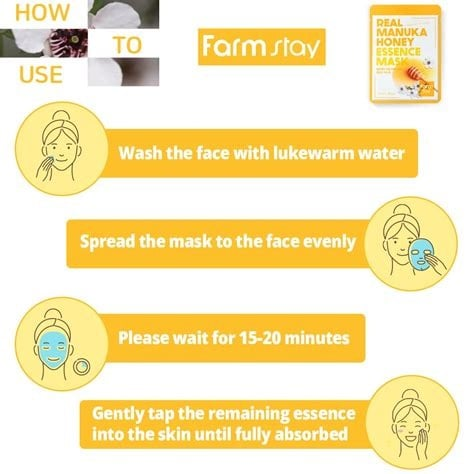

<div> <table style="border-collapse: collapse; width: 99.9809%;" border="1"><colgroup><col style="width: 49.9522%;"><col style="width: 49.9522%;"></colgroup> <tbody> <tr> <td> <div><span style="font-size: 14pt;"><strong><span data-path-to-node="17,0">Farmstay Masca de fata cu miere Manuka</span></strong></span></div> <div><span style="font-size: 14pt;"><strong><span data-path-to-node="17,0">23ml</span></strong></span></div> <div><span style="font-size: 14pt;"><span data-path-to-node="17,0">Ambalajul compact de 23 ml ascunde secretul unui ten profund hranit si catifelat. Masca Farmstay cu miere de Manuka ofera nutritie intensa si un efect glossy spectaculos, fiind solutia ideala, rapida si la indemana pentru revitalizarea completa a pielii uscate sau lipsite de vitalitate.</span></span></div> </td> <td></td> </tr> <tr> <td></td> <td><span style="font-size: 14pt;">Farmstay Real Manuka Honey este un veritabil elixir dulce creat special pentru hranirea tenului obosit. Infuzata cu 1000ppm extract de miere de Manuka, aceasta masca calmeaza instantaneu iritatiile pielii si actioneaza ca un hidratant exceptional, oferind o ingrijire profunda si un efect natural de stralucire.</span></td> </tr> <tr> <td><span style="font-size: 14pt;">Materialul fin, de o textura matasoasa, este imbibat generos intr-o formula bogata in factori de hidratare. Masca se muleaza impecabil pe piele, lasand un finisaj curat si revigorant, fara a bloca porii sau a lasa o senzatie neplacuta de greutate pe parcursul utilizarii.</span></td> <td></td> </tr> <tr> <td style="text-align: center;"></td> <td><span style="font-size: 14pt;">Ghidul simplu pentru rezultate optime: curata tenul cu apa calduta, aplica masca textila uniform pe intreaga fata si las-o sa actioneze timp de 15-20 de minute. Dupa indepartare, tapoteaza usor surplusul de esenta ramas pana la absorbtia completa pentru o hranire de lunga durata.</span></td> </tr> </tbody> </table> </div>